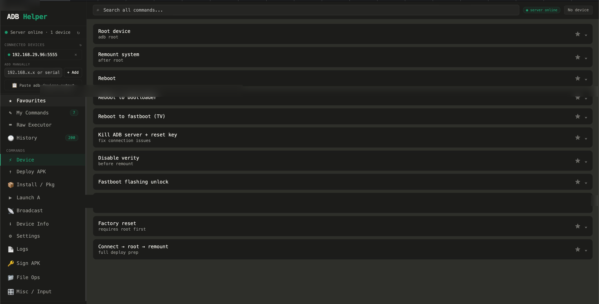
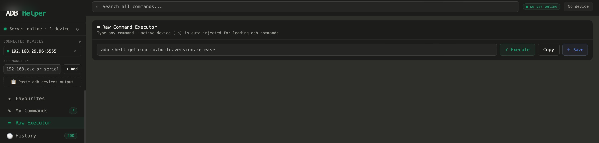
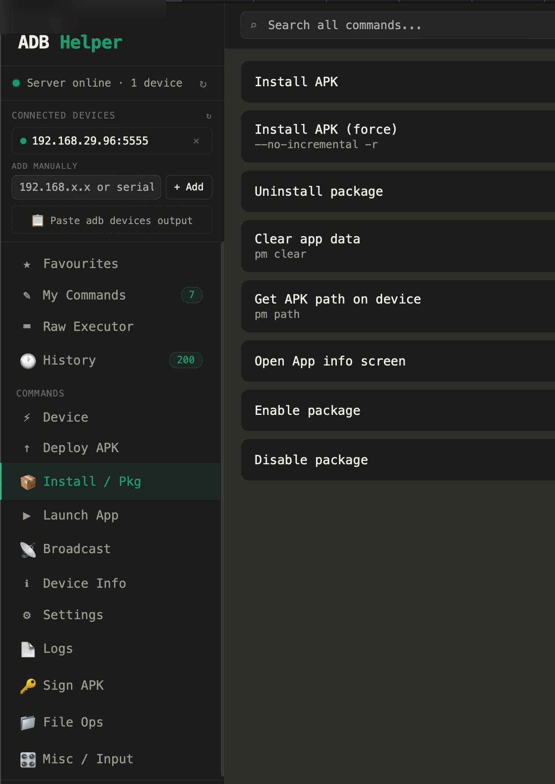
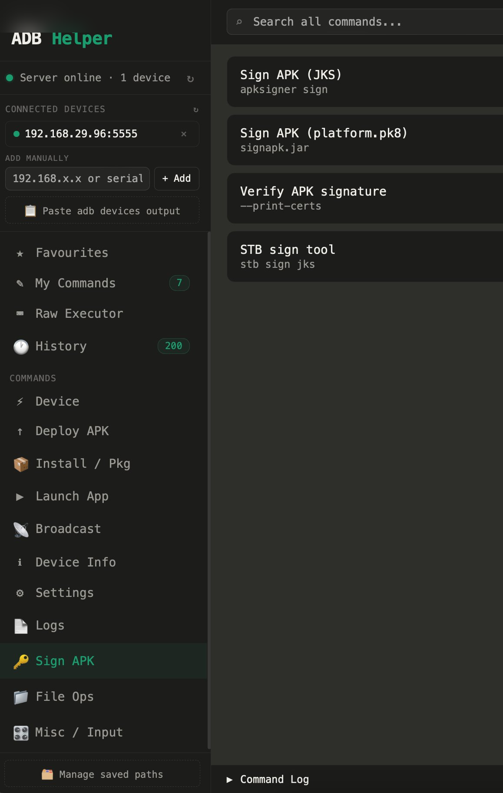

A web-based ADB command dashboard for STB/TV platform development — built to eliminate repetitive terminal work and speed up the daily debug cycle.
adb connect 192.168.x.x:5555, then adb root, then adb remount, then adb push, then adb shell am force-stop… repeated across multiple devices, multiple times per day. A missed step meant a broken deploy. No history. No shortcuts. Pure repetition.
adb -s call. Commands are categorised, searchable, and favouritable. Custom commands can be saved. The full history of 200+ executed commands is always one click away.
Four screenshots covering the main workflows — device management, command execution, package management, and APK signing.

-s <device> — no manual targeting needed.
-s flag is automatically prepended to leading adb commands — no need to remember the device serial or IP. Execute, Copy output, or Save as a custom command directly from this view.getprop, dumpsys, or custom shell queries.
--no-incremental -r), uninstall, clear app data via pm clear, get APK path on device, open App Info screen, and enable/disable packages — all without touching the terminal.--no-incremental is essential on STB — incremental installs fail on restricted system partitions. This is baked in by default.
apksigner, platform key signing via signapk.jar with platform.pk8, signature verification with --print-certs, and the full STB sign workflow.12+ command categories, all accessible from the sidebar. Plus cross-cutting features that make the whole tool more than the sum of its parts.
adb devices output to bulk-add.getprop and dumpsys.--print-certs.-s injection. Execute, copy output, or save as new command.This tool wasn't designed upfront. It grew iteratively from a problem — and AI assistance was used deliberately at each stage to move faster without compromising the engineering decisions.
.zshrc.disable-verity before remount, platform.pk8 for system app signing, the exact sequence for a clean deploy. These aren't things you learn from tutorials.